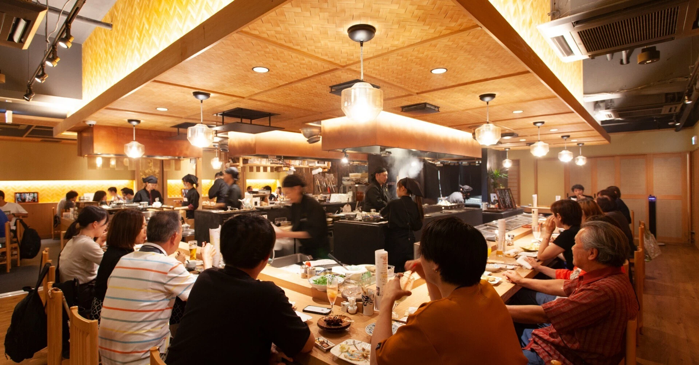
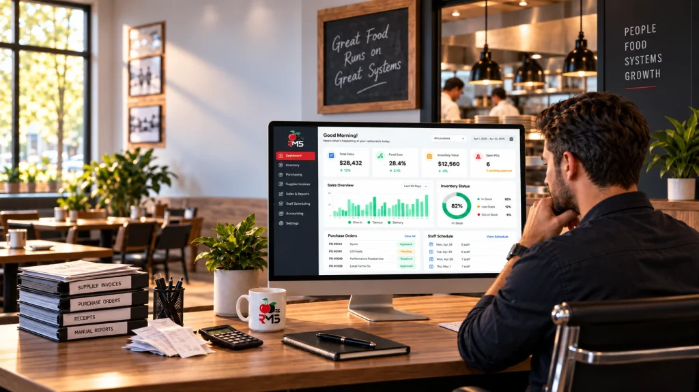

Your Recipe For Success
About ReciTrak
ReciTrak is an advanced restaurant production and supply chain management platform designed to transform recipes and sales data into actionable operational intelligence.
Real-Time Updates & Analysis
Cross-references recipes with real-time sales data to optimize inventory, alert stakeholders, and implicitly track kitchen waste metrics.
Information Integrity
Establishes recipes as the single source of absolute truth, ensuring standardized training and strict production consistency.
End-to-End Connection
Bridges the kitchen to procurement via direct partner integration, dynamically updating supply chain resource costs.
How it works
Our platform simplifies your workflow by automating reconciliation processes through a seamless, 4-step pipeline:
Precision Financial Control and Menu Engineering
ReciTrak builds a bulletproof financial foundation for your culinary business. The platform automatically determines your exact Cost of Goods Sold (COGS) based on your core recipes. It takes menu evaluation a step further by calculating true menu item profitability. By analyzing sales volumes, selling prices, COGS, and exact processing times, ReciTrak gives stakeholders a granular look at which items generate the highest return on investment.

Dynamic Production and Dynamic Recipe Management
Culinary environments require flexibility. ReciTrak allows managers to save and recall distinct recipe variations tailored for different production scenarios, such as catering events, seasonal shifts, or ingredient shortages. While providing this flexibility, the platform simultaneously serves as a standardized training tool for new hires. This ensures strict consistency in production standards and establishes clear operational accountability across the kitchen.
Automated, High-Efficiency Supply Chain Integration
ReciTrak bridges the gap between kitchen production and procurement. The platform continuously updates the cost of resources through direct integrations with supply chain partners. Furthermore, users gain exclusive access to a vast supply chain network, enabling competitive sourcing that drives down purchase costs.
Operational Analytics & Growth
Review cross-department analytics to scale performance milestones smoothly, streamline operational structures, and track long-term financial metrics seamlessly.